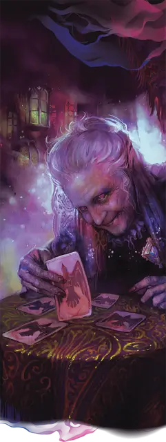

Мадам Ева
Madam Eva
Средний Гуманоид (Человек), хаотично-нейтральный, именной НИП

Класс Доспеха 10
Хиты 88 (16к8 + 16)
Скорость 20 футов
| мод | спас | ||
|---|---|---|---|
| СИЛ | 8 | −1 | −1 |
| ЛОВ | 11 | +0 | +0 |
| ТЕЛ | 13 | +1 | +5 |
| мод | спас | ||
|---|---|---|---|
| ИНТ | 17 | +3 | +3 |
| МДР | 20 | +5 | +5 |
| ХАР | 18 | +4 | +4 |
Навыки Восприятие +9, Запугивание +8, Магия +7, Обман +8, Проницательность +13, Религия +7
Чувства пассивное Восприятие 19
Языки Общий, Бездны, Инфернальный, Эльфийский
Опасность 10 (5900 опыта)
Бонус мастерства +4
Особенности
Использование заклинаний. Мадам Ева является заклинателем 16го уровня. Её способность к колдовству основывается на Мудрости (Сл спасбросков заклинаний 17, +9 к попаданию атаками заклинаний). Мадам Ева имеет следующие подготовленные заклинания жреца:
• Заговоры (неограниченно): свет [light], починка [mending], священное пламя [sacred flame], чудотворство [thaumaturgy];
• 1-й уровень (4 ячейки): порча [bane], приказ [command], обнаружение зла и добра [detect evil and good], защита от зла и добра [protection from evil and good];
• 2-й уровень (3 ячейки): малое восстановление [lesser restoration], защита от яда [protection from poison], божественное оружие [spiritual weapon];
• 3-й уровень (3 ячейки): сотворение пищи и воды [create food and water], разговор с мёртвыми [speak with dead], духовные стражи [spirit guardians];
• 4-й уровень (3 ячейки): предсказание [divination], свобода перемещения [freedom of movement], страж веры [guardian of faith];
• 5-й уровень (2 ячейки): высшее восстановление [greater restoration], оживление [raise dead];
• 6-й уровень (1 ячейка): поиск пути [find the path], поражение [harm], истинное зрение [true seeing];
• 7-й уровень (1 ячейка): огненная буря [fire storm], регенерация [regenerate];
• 8-й уровень (1 ячейка): землетрясение [earthquake];
Черты Мадам Евы.
Идеал. «Я хочу, чтобы Страд стал свободен от своего проклятья».
Привязанность. «Сейчас мой народ – Вистани».
Слабость. «Люди, чьи судьбы я прорицаю, не столь важны. Они лишь средства, чтобы довести всё до конца.»
Действия
Кинжал. . Рукопашная атака оружием: +4 к попаданию, досягаемость 5 футов, одна цель. Попадание: 2 (1к4) колющий урон.
Проклятие (Перезаряжается после продолжительного отдыха). . Мадам Ева избирает целью одно существо, которое она может видеть в пределах 30 футах от неё. Цель должна преуспеть в спасброске Мудрости Сл 17 или стать проклятой. Пока цель проклята, она станет ослеплёной и оглохшей. Проклятие длится пока его не снимут заклинанием высшее восстановление [greater restoration], снятие проклятия [remove curse] или похожей магией. Когда проклятие спадает, Мадам Ева получает 3к6 урона психической энергией.
Сглаз (Перезаряжается после короткого или продолжительного отдыха). . Мадам Ева избирает целью одно существо, которое она может видеть в пределах 10 футах от неё и накладывает на неё одно из следующих заклинаний (Сл спасброска 17), которым не требуется ни соматических, ни материальных компонентов: дружба с животными [animal friendship], очарование личности [charm person], удержание личности [hold person]. Если цель преуспевает в начальном спасброске, Мадам Ева становится ослеплённой до конца своего следующего хода. Как только цель преуспевает в спасброске против этого эффекта, она становится иммунной к особенности Сглаз всех вистани на 24 часа.
Описание
Гадалка Мадам Ева живет среди Вистани, но она не одна из них. На вид ей лет семьдесят, но на самом деле, ей намного больше.
Королевская кровь. Мадам Ева – сводная сестра Страда, но Страд не знает об этом. Ее настоящее имя – Катарина, и она дочь женщины народа вистани, которую король Баров, отец Страда, затащил в постель во время одного из своих многочисленных военных походов. Мадам Ева знает, что она сводная сестра Страда, но она никому не говорила, что в её жилах течёт королевская кровь.
Матерь Ночи. Более четырехсот лет назад Катарина приехала в Баровию и устроилась на службы к Страду, она стала горничной в Замке Равенлофт. Она знала замок, как свои пять пальцев, а также присутствовала на свадьбе Сергея и Татьяны. После того, как Страд сошел с ума и убил своего брата, она сбежала из замка и укрылась вместе с народом вистани. Позже она заключила сделку с богиней Матерью Ночи, обменяв свою юностью на власть, чтобы устранять зло приченённое Страдом. Матерь Ночи превратила Катарину в нестареющую старуху, одаренную силой магического предвидения. В обличье Мадам Евы, она использует эту способность, чтобы помочь Страду. Она может посылать своих вистани с их фургонами, чтобы те посещали другие миры и приводили искателей приключений во владения Страда, в надежде, что они найдут способ уничтожить вампира или освободить Страда.
Во имя любви Страда. Тёмные Силы Равенлофта могли бы рассмотреть Мадам Еву как достойный выбор для замены Страда в качестве хозяина Равенлофта, но у неё есть все интересующие её силы и она не желает его сместить. Она скорее поможет Страду найти кого-то, кто превзойдёт его, хотя у неё есть серьёзные сомнения на счёт того, что у неё получится найти кого-то такого. Никто из её сородичей вистани не знает о настоящей личности или истинных целях Мадам Евы. Их приводит в замешательство её желание оставаться в Баровии.